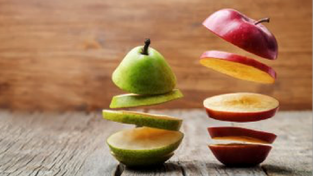

Cereal & Nutrition
Cereal & Nutrition
시리얼의 혁신
- 19세기에 첫 등장 후 지난 100년 동안 더 맛있고 건강하게 변화하는 시리얼
- 옥수수, 밀, 쌀 등 곡류를 주원료로 비타민류와 무기질류 등 영양성분을 강화
- 푸레이크, 오트밀, 그래놀라, 뮤즐리, 선식 등 다양한 형태의 가공식품을 지칭
- 1863년에 발명된 꿀과 함께 오븐에 구운 통곡물, 그래놀라
- 시리얼은 1980년대 푸레이크로 국내 시장에 처음 진출했습니다. 그래서인지 국내에서는 시리얼 하면 푸레이크를 시리얼의 원조라는 생각이 지배적이지만 가장 먼저 개발된 형태의 시리얼은 1863년에 발명된 그래놀라입니다. 19세기 후반의 그래놀라는 통밀 가루를 반죽한 뒤 건조한 건강식으로 다소 딱딱한 형태였지만 20세기에 들어서며 그래놀라는 점차 통곡물에 꿀이나 시럽을 더해 오븐에 구운 뒤 말린 과일, 견과류와 곁들여 먹는 현대적인 모습으로 변화했습니다. 오늘날 그래놀라는 통곡물에 과일과를 더한 만큼 비타민, 무기질, 식이섬유를 골고루 섭취할 수 있어 최근 국내 시장에서 인기가 높은 시리얼이기도 합니다. 
- 익히지 않고 자연 그대로 먹는 유럽의 건강식 뮤즐리
- 그 다음 등장한 시리얼은 뮤즐리로 독일, 영국 등 유럽에서 특히 대중적으로 사랑받는 제품입니다. 뮤즐리는 1900년대 초 스위스 의사 막시밀리안 비르헤르-베너가 취리히에서 운영하던 건강 클리닉의 환자들을 위해 만들어졌습니다. 뮤즐리는 곡물, 과일, 견과류를 가공하지 않고 자연 건조시킨 뒤 혼합해 만드는 것이 특징입니다. 가공을 최소화한 뮤즐리는 원재료의 맛과 식감을 느낄 수 있으며 식이섬유가 풍부하고 꿀이나 시럽이 첨가되지 않아 열량과 당이 낮은 편입니다.
- 우연이 낳은 역사적인 발명, 푸레이크
- 뮤즐리 탄생과 비슷한 시기에 켈로그 창업자 윌리엄 키이스 켈로그와 그의 형 존 하비 켈로그 박사가 운영하는 요양원의 환자들을 위한 건강 식품으로 푸레이크를 발명하면서 시리얼의 대중화에 기여했습니다. 소화가 잘 되는 빵을 개발하던 켈로그 형제는 우연히 밀가루 반죽이 건조되어 생긴 얇은 형태의 밀 푸레이크를 발견했고 이를 구운 것이 푸레이크의 시초입니다. 푸레이크는 옥수수를 주성분으로 보리, 호밀 등 곡물을 반죽한 뒤 얇게 압축하고 구워 낸 형태로, 대표적인 푸레이크 제품으로는 켈로그 콘푸로스트가 있습니다.
- 에너지바, 컵시리얼 등 혁신적인 신제품 개발 지속
- 켈로그는 “건강한 세상을 만들기 위해 품질 좋은 제품을 만들어야 한다”는 창업자 W.K. 켈로그의 강한 신념 아래 새롭고 혁신적인 제품을 지속적으로 개발하고 있습니다. 또한 발빠르게 변화하는 시장 트렌드에 맞춰 영양뿐만 아니라 간편함을 더한 다양한 종류의 시리얼을 비롯해 에너지바, 컵시리얼 제품들도 연이어 선보이고 있습니다. 특히 켈로그는 바쁜 일상에서 영양과 건강을 챙기려는 현대인들의 생활 패턴에 맞춰 에너지바를 개발했습니다. 에너지바는 한 손에 쏙 들어오는 크기로 휴대하기 편리하며, 언제 어디서나 간편하게 영양을 섭취할 수 있는 것이 특징입니다.